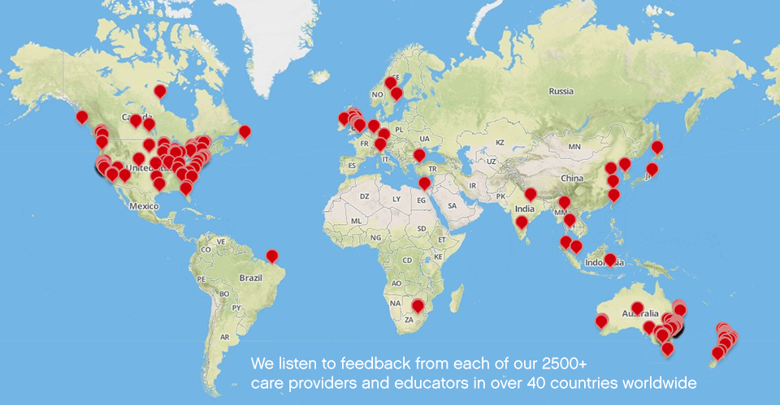
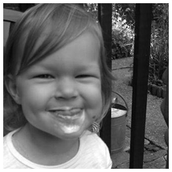

---

layout: default

title: Learning journeys made easy, Early Childhood documentation, Kinderloop

---
<div id="about" class="container">
  <h2 class="top-header">The Kinderloop story</h2>
  <div class="block">
    <div class="row">
      <div class="span12">
        <div class="row">
          <div class="span6 block">
            <p> <b>As time poor educators,</b> we have responsibilities of documenting, planning, recording, assessing and evaluating. With one simple and very easy to use program, Kinderloop allows us to achieve all these things, through our own private loop that links our families and educators together. It helps create a fun, holistic approach to managing our requirements under National Regulations, with ease. The future of early childhood documentation is here and its being shaped by educators like you. </p>
            <p> <b>Yes, we are busy parents too,</b> we feel a tad guilty dropping off our kids at preschool, daycare or OSHC in the morning, and spend the day wondering what they're doing. We try to learn as much as we can during drop off and pickup, but things are always so hectic that it's hard to really feel involved in their learning and development, our extended family are also less involved. Kinderloop solves this problem, we are now more connected than ever and can smile knowing that our family is fully engaged in our children's learning, play and interactions. </p>
            <p><b>With the help of amazing educators and family members in over 85 countries,</b> we are creating a continuum of learning and care around the kids, reconnecting the busy family and helping every educator save their precious time & resources. Kinderloop was founded by Dan Day over 5 years ago; trainee father to Poppy and Griffin, a dad who wanted to feel a little more involved with his childrens daily development. We've had experience in creating educational software in some of the worlds largest educational authorities and are excited to help early years educators have fun with technology.</p>
          </div>
          <div class="span6 block">
            <h3 style="margin: 0 0 10px;line-height: inherit;"><i class="fa fa-bullhorn text-green"></i> The Kinderloop pledge</h3>
            <p>Our daily mission is to empower early childhood educators worldwide and make it super easy and fun for teachers and care providers to capture and document those special moments of a child's development and have an informed and engaged community of family and staff, all centred around the kids.</p>
            <p>We will treat all fellow Kinderloopers with care and respect</p>
            <p>We will listen twice as much as we speak</p>
            <p>We will promise to keep Kinderloop the simplest and most private, fun education communication platform</p>
            <p>We will use less resources and give back to our community at every opportunity</p>
			<p>We love our dedicated team and laugh together as much as we can! </p>
          </div>
          <!--span6-->
        </div>
        <!--row-->
        <p></p>
      </div>
      <!--span12-->
    </div>
    <!--block-->
 
  
  <div class="block">
    <div class="row">
      <div class="span12">
        <h3 class="section-header">Meet the founding team</h3>
        <div class="row">
          <div class="span4">
            <div class="profile"></div>
            <div class="person"> <span class="name text-green">Dan Day</span> <a class="contact" href="mailto:dan.day@kinderloop.com">dan.day@kinderloop.com</a>
              <p class="description"> Dan runs day to day operations at Kinderloop, he is a father of two little munchkins and the founder of Kinderloop. </p>
            </div>
            <!--span4-->
          </div>
          <!--row-->
          <div class="span4">
            <div class="person">
              <div class="profile"></div>
              <span class="name text-green">Jenny Brown</span> <a class="contact" href="mailto:support@kinderloop.com">support@kinderloop.com</a>
              <p class="description"> Jenny is a mother of two, and an Early Years Educator. She is in charge of all our new Kinderloopers. </p>
            </div>
          </div>
          <!--span4-->
          <div class="span4">
            <div class="person">
              <div class="profile"></div>
              <span class="name text-green">Magnus Butlin</span> <a class="contact" href="mailto:magnus.butlin@kinderloop.com">magnus.butlin@kinderloop.com</a>
              <p class="description"> Magnus is a devoted father, and keeps our super duper technology humming along nicely. </p>
            </div>
          </div>
          <!--span4-->
        </div>
      </div>
    </div>
  </div>
  <div class="row">
    <div class="span3">
      <div class="vcard">
        <p class="org">Kinderloop Asia Pacific</p>
        <p class="adr"> <span class="street-address">145 National Innovation Centre</span><br>
          <span class="locality">Australian Technology Park</span><br>
          <span class="region">Eveleigh, Sydney NSW </span> <span class="postal-code">2015</span><br>
          <span class="country">Australia</span> </p>
        <div class="div email"><a href="mailto:hello@kinderloop.com">hello@kinderloop.com</a></div>
        <div class="div tel">+61 (0)4900 208 16</div>
        <div class="div tel">or +61 (0)401 434 028</div>
      </div>
    </div>
    <div class="span3">
      <div class="vcard">
        <p class="org">Kinderloop Inc USA</p>
        <p class="adr"> <span class="street-address">548 Market Street #77345</span><br>
          <span class="locality">San Francisco</span><br>
          <span class="region">California</span> <span class="postal-code">94104-5401</span><br>
          <span class="country">U.S.A.</span> </p>
        <div class="div email"><a href="mailto:hello@kinderloop.com">howdy@kinderloop.com</a></div>
        <div class="div tel">+1 415 689 9556</div>
      </div>
    </div>
  </div>
</div>
